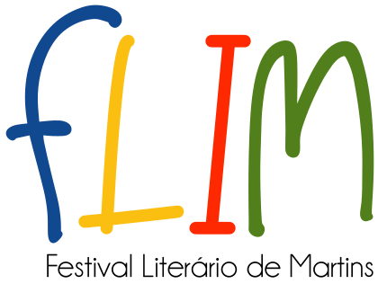
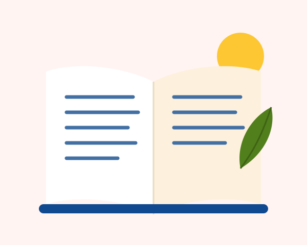

Um encontro dedicado à leitura, à escrita e à formação de leitores, reunindo escritores, educadores, estudantes e a comunidade na Serra de Martins.
- Data
- A definir
- Local
- Martins/RN
- Entrada
- Gratuita
O festival
A literatura como caminho para aprender, criar e conviver
O FLIM aproxima a comunidade do livro e da leitura, valoriza a produção literária potiguar e fortalece o papel da escola e das bibliotecas na formação de leitores.
- Formação de leitores — mediação de leitura e contação de histórias.
- Escrita criativa — oficinas que incentivam a expressão autoral.
- Educação — diálogo com professores sobre leitura em sala de aula.
- Cultura potiguar — autores, histórias e saberes da região serrana.

Programação
Atividades para todas as idades
A programação completa, com horários e convidados, será divulgada em breve.
Mesas de conversa
Escritores, pesquisadores e educadores em debate.
Oficinas
Escrita criativa, mediação de leitura e ilustração.
Espaço infantil
Contação de histórias e atividades lúdicas.
Lançamentos
Novas obras e sessões de autógrafos.
Como participar
Inscrição em três passos
- 01
Acesse o formulário
Clique em “Inscreva-se” para abrir o formulário oficial.
- 02
Preencha seus dados
Informe seus dados e escolha as atividades de interesse.
- 03
Aguarde a confirmação
Você receberá as orientações pelos contatos informados.
Dúvidas frequentes
Perguntas e respostas
Não encontrou o que procurava? Escreva para contato@exemplo.com.
A participação é gratuita?
Sim. As atividades são gratuitas, mas algumas têm vagas limitadas e exigem inscrição prévia.
Haverá certificado de participação?
Sim. Participantes inscritos nas oficinas e mesas receberão certificado, conforme a frequência registrada.
Escolas podem inscrever turmas?
Sim. Indique essa opção no formulário para que a equipe entre em contato e organize o agendamento.
Quem pode participar?
Estudantes, professores, bibliotecários, escritores, famílias e toda a comunidade de Martins e região.